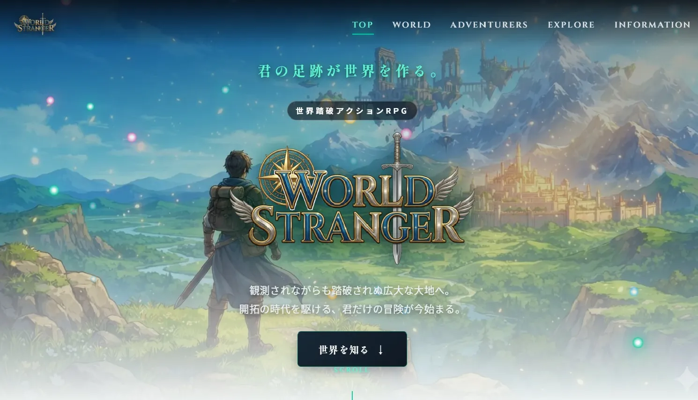
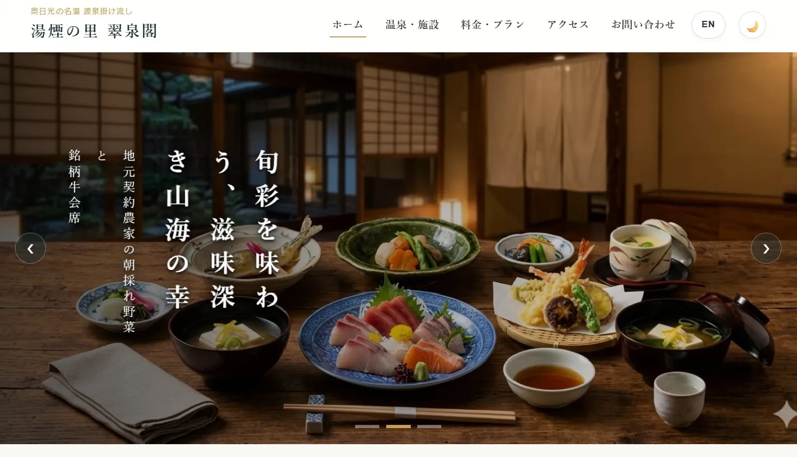
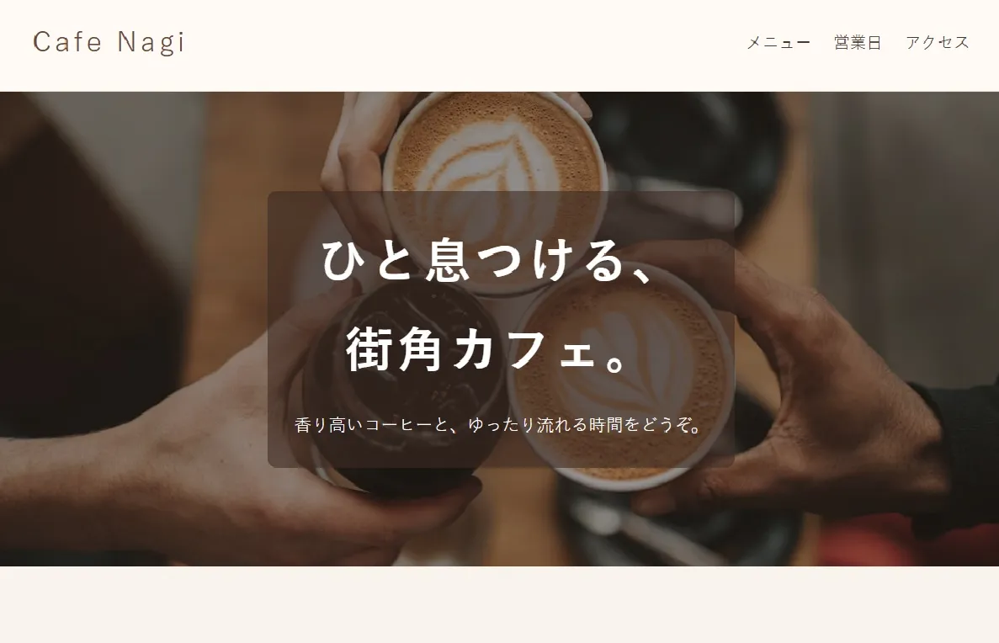
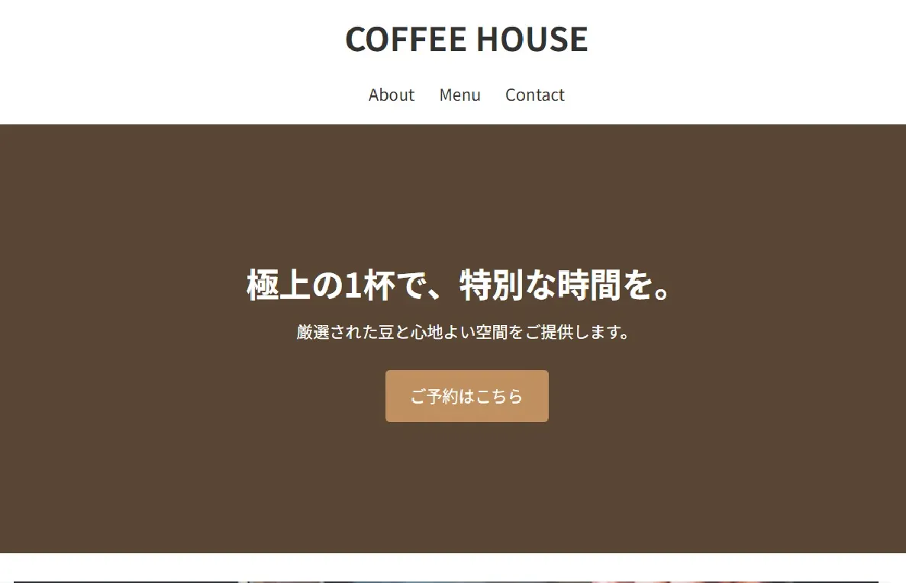
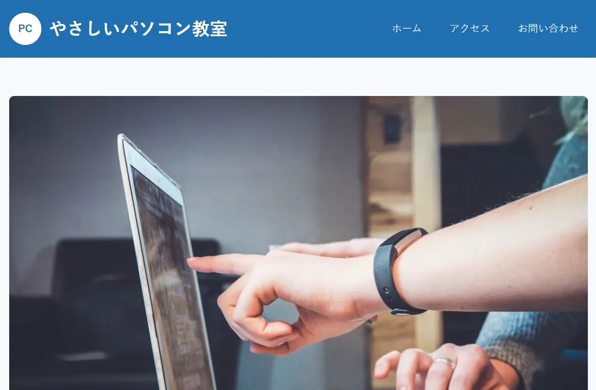
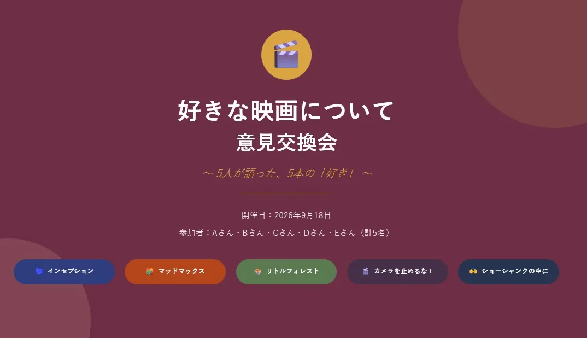
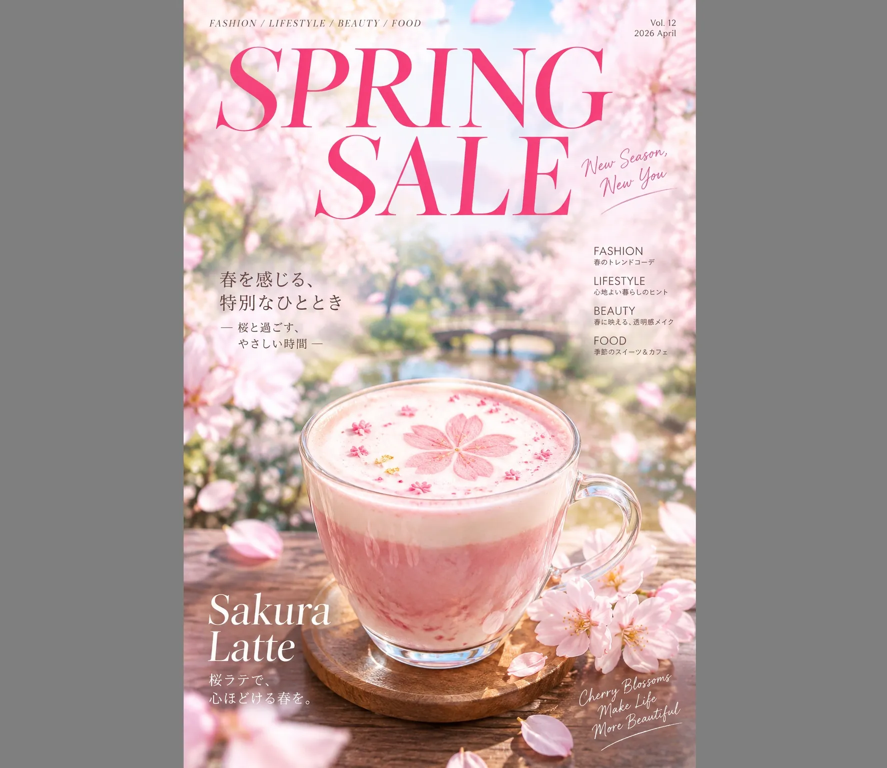
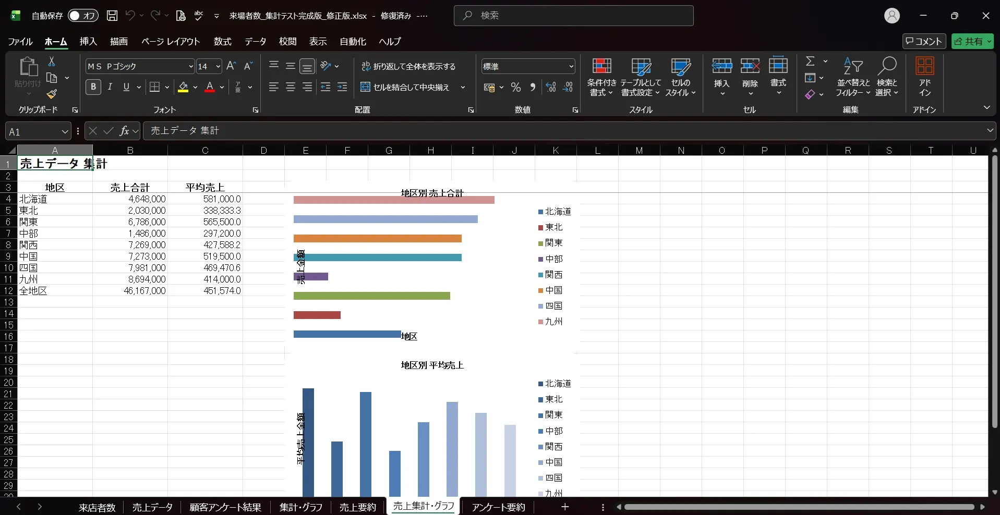
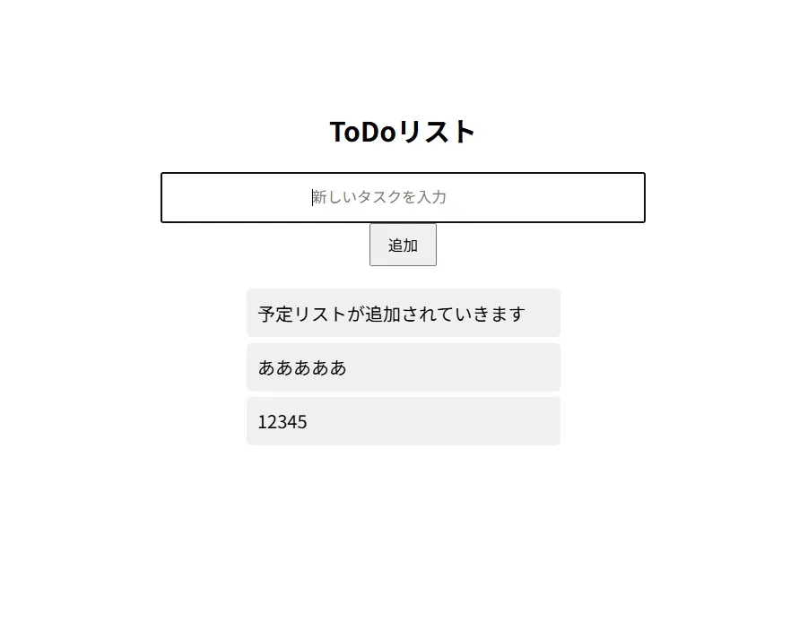

PROJECT / WORLD STRANGER
WORLD STRANGER公式ホームページ
職業訓練中に制作した、架空のゲームの公式ホームページ。「全ての作業をAIツール上で完結させる」がコンセプト。手動での修正を一切せずにAIへの指示のみで制作。

職業訓練中に制作した、架空のゲームの公式ホームページ。「全ての作業をAIツール上で完結させる」がコンセプト。手動での修正を一切せずにAIへの指示のみで制作。





トランスクリプトを活用した会議の文字起こしと議事録制作のグループワーク。

AI画像生成を活用した広告制作ワークショップ。プロンプトもAIを使って生成。
AIを利用した文章、資料制作のワークショップ。発表資料もAIで制作。

AIを活用したofficeソフトでの文章製作、表計算、スライド制作など。

カルーセルスライド、ハンバーガーメニューなど基礎的なWebサイトの機能を学習。